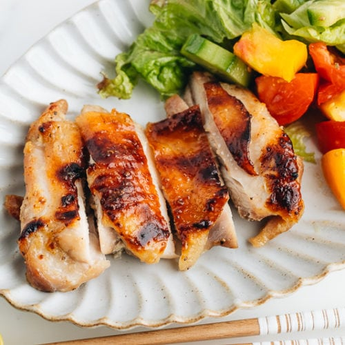

Chicken

Description
Shio Koji (塩麹, 塩糀) is a natural seasoning that we use to marinate, tenderize,
and enhance the umami in foods. It's made of just a few simple ingredients: salt,
water, and rice koji.
Koji is a specific strain of mold that has been cultured over the centuries.
You may feel hesitant reading all about mold and wonder why we make rice moldy on
purpose. But guess what, you have most likely eaten it already! Koji has been the
key ingredient to make miso, soy sauce, sake, mirin, rice vinegar, amazake, shochu,
and today's star, shio koji. Why do we use koji in cooking? Because it's a live food
that is rich in enzymes. And we need enzymes to break down starches and proteins in
food into sugars and amino acids. This process makes the food naturally sweet,
aromatic, and rich in umami.
Ingredients
- 8 pieces boneless, skin-on chicken thighs (or use bone-in, skin-on chicken thighs and ask the butcher to remove the bones)
- 1 cup shio koji
- 1 Tbsp soy sauce
- Freshly ground black pepper
Steps
- Gather all the ingredients.
- Combine 1 cup shio koji and 1 Tbsp soy sauce in a bowl or measuring cup.
- Season both sides of 8 pieces boneless, skin-on chicken thighs with freshly ground black pepper.
- Pour the shio koji mixture on the chicken pieces and coat them well on both sides. Cover and let it marinate in the refrigerator for 30 minutes (minimum) or up to 3 hours.
- Preheat the oven to 350ºF (180ºC). For a convection oven, reduce cooking temperature by 25ºF (15ºC). Remove the shio koji as much as possible and transfer to a baking sheet lined with parchment paper.
- If your oven doesn't come with a temperature probe, you can use a ThermoWorks Chef Alarm. Insert the stem of the probe into the thickest part of the chicken, or in the center of the chicken if it is even in thickness.
- Bake at 350ºF (180ºC) until the internal temperature of the chicken reaches to 165ºF (74ºC), roughly 25 minutes.
- Once the chicken is cooked through, change the oven setting from Bake to Broil. Broil the chicken until the skin has nice char, about 3–5 minutes (depends on how far the chicken is from the heat source). Remove from the oven.
- Cut each chicken thigh into 4 pieces (if you eat with chopsticks) and serve immediately.